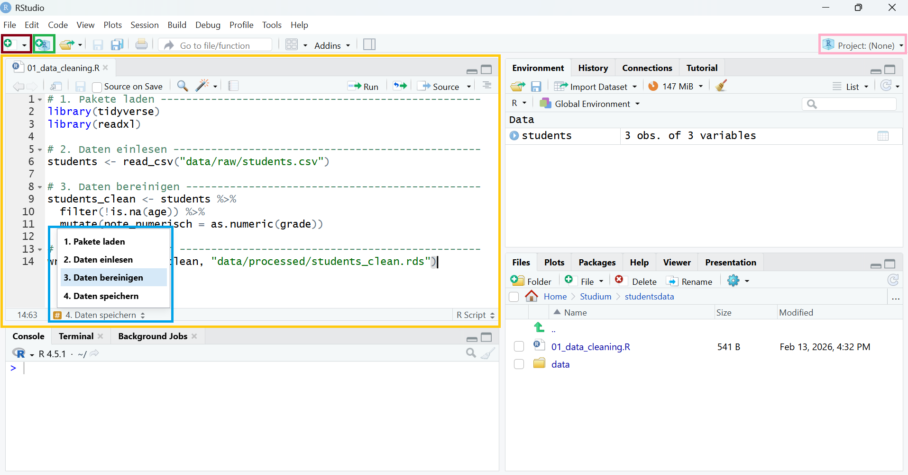

2 Best Practices
2.1 R-Scripts
Bisher haben wir unseren Code immer direkt in der Konsole geschrieben und dort ausgeführt. Das ist für erste Schritte praktisch, aber der Code geht leicht verloren und lässt sich nur schwer nachvollziehen oder erneut verwenden. Die Verwendung eines R-Scripts erlaubt uns, Code dauerhaft zu speichern, zu dokumentieren und später reproduzierbar erneut auszuführen. Außerdem lassen sich Scripts strukturieren, kommentieren und leichter mit anderen teilen. Dadurch wird die Arbeit nachvollziehbarer, effizienter und weniger fehleranfällig.
Um ein R-Script zu öffnen, klicke auf den New File Button oben links in RStudio (rot hervorgehoben in Abbildung 2.1). Dadurch öffnet sich ein zusätzliches Panel im Interface (gelb markiert). Wir können nun unseren Code in diesem Text-Editor schreiben, kommentieren und ausführen. Nachdem wir das R-Script speichern, können wir zu einem späteren Zeitpunkt unseren Code leicht reproduzieren und fortsetzen.
2.1.1 Ausführen von Befehlen im R-Script
Da ein R-Script ein Text-Editor ist, wird durch Enter nicht mehr der Befehl ausgeführt (wie in der Konsole), sondern eine neue Zeile eingefügt. Um einen Prompt auszuführen, drücken wir stattdessen gleichzeitig Strg + Enter (oder cmd + Enter bei einem Apple-Gerät). R führt immer den vollständigen Prompt aus, unabhängig davon, an welcher Stelle in der Zeile der Maus-Cursor steht. Um mehrere Code-Zeilen gleichzeitig auszuführen, markiere diese und drücke anschließend Strg + Enter.
2.1.2 Aufbau eines guten R-Scripts
Damit wir auch zu einem späteren Zeitpunkt nachvollziehen können, was in einem Script passiert, ist sinnvoll, einer gewissen Struktur zu folgen. Zu Beginn eines R-Scripts fassen wir als Kommentar kurz den wesentlichen Inhalt zusammen. Um unser Script in Abschnitte zu unterteilen, können wir sectioning comments verwenden (Keyboard-Shortcut: Strg + Shift + R):
# load packages ---------------------------------------------------------------Um zwischen den Abschnitten zu springen, können wir das Navigations-Dropdown-Menü unten links im R-Script-Editor verwenden (blau markiert in Abbildung 2.1). Ein übersichtliches R-Script ist zum Beispiel so aufgebaut:
# ============================================================================
# Projekt: Analyse von Studentendaten
# Script: 01_data_cleaning.R
# Autor: Dein Name
# Datum: 2025-10-05
# Beschreibung: Lädt und bereinigt die Rohdaten
# ============================================================================
# 1. Pakete laden ----------------------------------------------------------
library(tidyverse)
library(readxl)
# 2. Daten einlesen --------------------------------------------------------
students <- read_csv("data/raw/students.csv")
# 3. Daten bereinigen ------------------------------------------------------
students_clean <- students %>%
filter(!is.na(age)) %>% # Filtern von Studierenden ohne Altersangabe
mutate(grade_numerisch = as.numeric(grade))
# 4. Daten speichern -------------------------------------------------------
write_rds(students_clean, "data/processed/students_clean.rds")
TippDo’s und Don’ts für R-Scripts
Do’s:
- Aussagekräftige Kommentare
- Logische Struktur
- Ein Script = Eine Arbeitsaufgabe
- Pakete am Anfang laden
- Sektionen mit
# ----
Don’ts:
- Absolute Pfade verwenden
- Zu lange Scripts
- Hartcodierte Werte
- Fehlende Kommentare
2.2 Working Directories
Das Working Directory legt den Ordner fest, in dem R standardmäßig nach Dateien sucht und neue Dateien speichert. In RStudio ist das standardmäßig der Dokumenteordner des Systems. Um dein Working Directory zu überprüfen, verwende getwd():
getwd()
#> "C:/Users/fischeneder/Documents"Dateien, die man ohne vorheriges Setzen eines Working Directory öffnet oder speichert, werden zunächst in diesem Ordner gesucht bzw. abgelegt. Daher ist es sinnvoll, das Working Directory bewusst auf den gewünschten Projektordner zu setzen, um die Arbeit strukturiert, reproduzierbar und unabhängig vom Standardpfad zu gestalten.
Das Working Directory setzt du mittels mit setwd():
setwd("pfad/zu/deinem/projektordner")
WarnungRelative Pfade > absolute Pfade
In R kannst du Daten aus deinem Dateiexplorer importieren und exportieren. Eine Möglichkeit, auf eine Datei zuzugreifen ist es, den gesamten (=absoluten) Dateipfad zu spezifizieren. Möchtest du beispielsweise eine csv-Datei im Datenordner innerhalb deines Projektordners einlesen:
dataset <- read_csv("pfad/zu/deinem/projektordner/daten/dataset.csv")Ein sinnvoll gewähltes Working Directory beinhaltet alle für dein Script notwendigen Ordner und Dateien. Nach dem Setzen des Working Directorys kannst du auf diese zugreifen, ohne den gesamten (absoluten) Pfad zu spezifizieren:
setwd("pfad/zu/deinem/projektordner")
dataset <- read_csv("daten/dataset.csv")R sucht dabei die gewünschte Datei ausgehend von deinem Working Directory. Das hat den Vorteil, dass du den Projektordner verschieben oder teilen kannst, und nur das Working Directory angepasst werden muss, damit dein Code läuft.
2.3 R-Projects
Das Setzen des Working Directorys verlangt einen absoluten Dateipfad. Dies kann leicht zu Problemen führen, wenn du deinen Projektordner verschiebst oder dein Projekt mit anderen Personen teilst. Die Verwendung eines R-Projects bietet deutliche Vorteile gegenüber dem manuellen Setzen des Working Directorys mit setwd() in einem Script. Ein R-Project legt automatisch das Arbeitsverzeichnis auf den Projektordner fest, wodurch alle Scripts, Daten und Ergebnisse konsistent im gleichen Ordner gesucht und gespeichert werden. Das macht die Arbeit nicht nur übersichtlicher und strukturierter, sondern auch reproduzierbar, da andere Nutzer das Projekt auf ihrem Computer öffnen können, ohne Pfade im Code anpassen zu müssen.
Um ein R-Project für diesen Einführungskurs zu erstellen, führen wir die Schritte in Abbildung 2.2. Im letzen Schritt geben wir unserem R-Project einen passenden Namen (r_intro) und wählen den Ordner aus, in dem wir das Projekt ablegen wollen. Bei der Erstellung des R-Projects wird dann in diesem Ordner ein neuer Subordner erstellt, der nun automatisch das Working Directory dieses Projects ist. In diesem Ordner legen wir alle für unser Projekt relevanten Dateien ab. Somit ist unser Projekt jederzeit reproduzierbar.

Das aktuell geöffnete R-Project wird im Interface oben rechts über dem Environment-Panel angezeigt (rosa markiert in Abbildung 2.1). Um zwischen R-Projects zu wechseln, können wir auf diesen Button klicken und ein anderes Project auswählen.
HinweisAbstellen der automatischen Workspace-Speicherung
In den Default-Einstellungen speichert RStudio beim Beenden automatisch den aktuellen Workspace und lädt ihn beim nächsten Start wieder. Das hat den Vorteil, dass nicht gespeicherte Objekte weiterhin verfügbar sind und man scheinbar nahtlos weiterarbeiten kann.
Diese Voreinstellung bringt jedoch auch Risiken mit sich. Zum einen besteht die Gefahr, sich auf die automatische Sicherung zu verlassen und Änderungen an Skripten oder Daten nicht bewusst und regelmäßig zu speichern. Zum anderen kann es – insbesondere bei der Arbeit mit mehreren R-Projects – leicht passieren, dass Analysen im falschen Projekt umzusetzen oder Objekte im falschen Umfeld zu speichern, da standardmäßig das zuletzt geöffnete Project erneut gestartet wird.
Um diese Probleme zu vermeiden, empfiehlt es sich, die automatische Workspace-Speicherung zu deaktivieren. Die entsprechenden Einstellungen findest du in der Menüleiste unter Tools → Global Options, wo du die in Abbildung 2.3 markierten Optionen anpassen kannst.

2.4 Ordnerstruktur, Namensgebung und Code-Style
Eine gute Ordnerstruktur ist die Grundlage für organisierte Projekte. Nach der Erstellung deines R-Projects solltest du dich um Unterordner für Daten, Scripts und Output kümmern. Deine finale Ordnerstruktur könnte etwa so aussehen:
mein-projekt/
├── data/
│ ├── raw/ # Originaldaten (nie ändern!)
│ └── processed/ # Bearbeitete Daten
├── scripts/
│ ├── 01_daten_laden.R
│ ├── 02_daten_bereinigen.R
│ └── 03_analyse.R
├── output/
│ ├── figures/ # Grafiken
│ └── tables/ # Tabellen
├── docs/ # Dokumentation
├── mein-projekt.Rproj
└── README.txtAuch deine Dateinamen sollten einer einheitlichen Struktur folgen. Nummeriere deine R-Scripts, damit sie im Ordner in einer sinnvollen Reihenfolge aufscheinen. Benenne Output-Dateien mit einem konstanten Muster (z.B. figure01.png, figure02.png, …).
TippCode-Style
Ein guter und kohärenter Code-Style ist wichtig, weil er den Code lesbar, verständlich und leichter wartbar macht. Konsistente Einrückungen, sprechende Variablennamen und klare Struktur helfen nicht nur dir selbst, den Überblick zu behalten, sondern auch anderen, die den Code später lesen oder erweitern müssen. Außerdem reduziert ein sauberer Stil die Wahrscheinlichkeit von Fehlern, erleichtert das Debuggen und sorgt dafür, dass Projekte langfristig reproduzierbar und professionell bleiben.
Arbeite dich durch das Kapitel zu Code-Style in R for Data Science durch, um Best Practices zu erlernen!